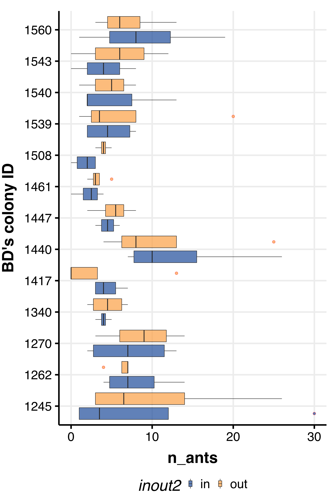
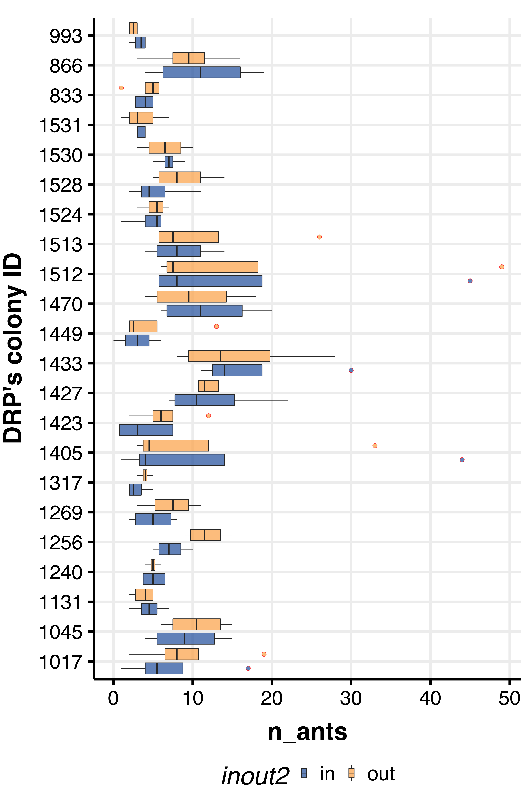
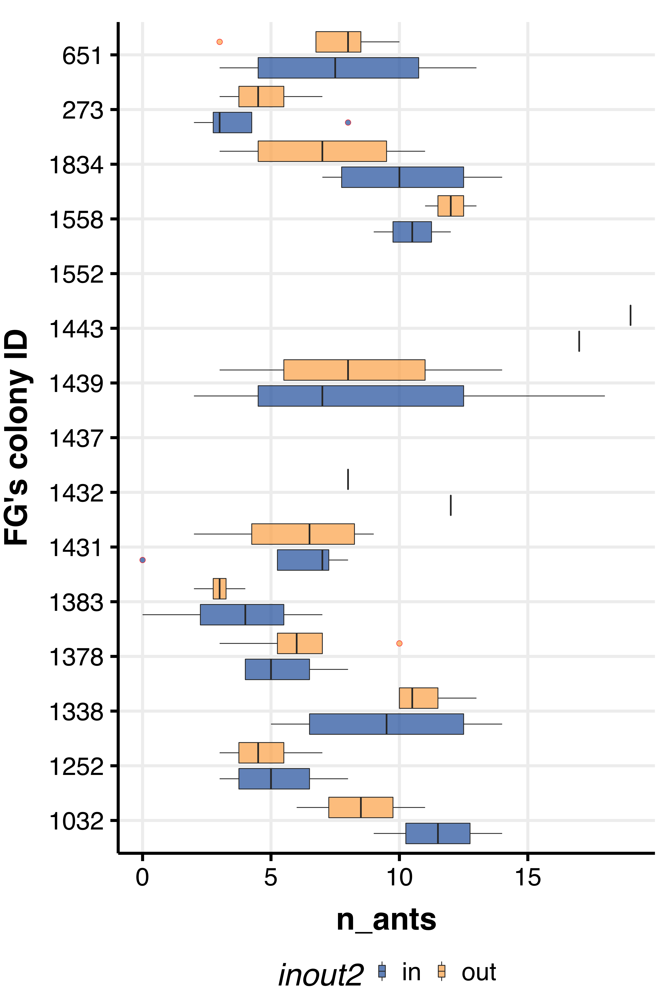
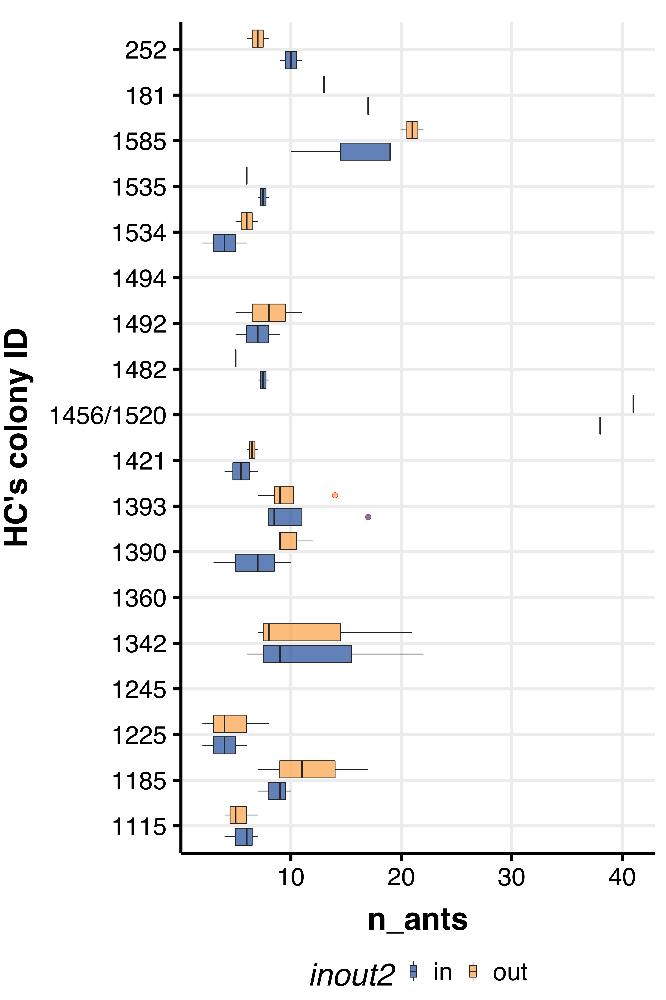
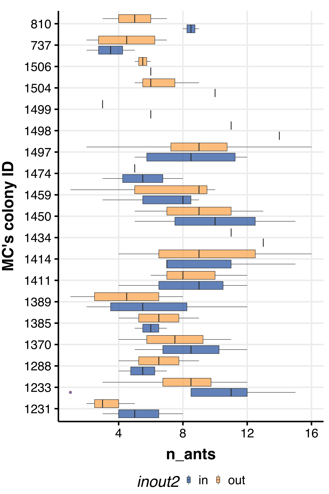
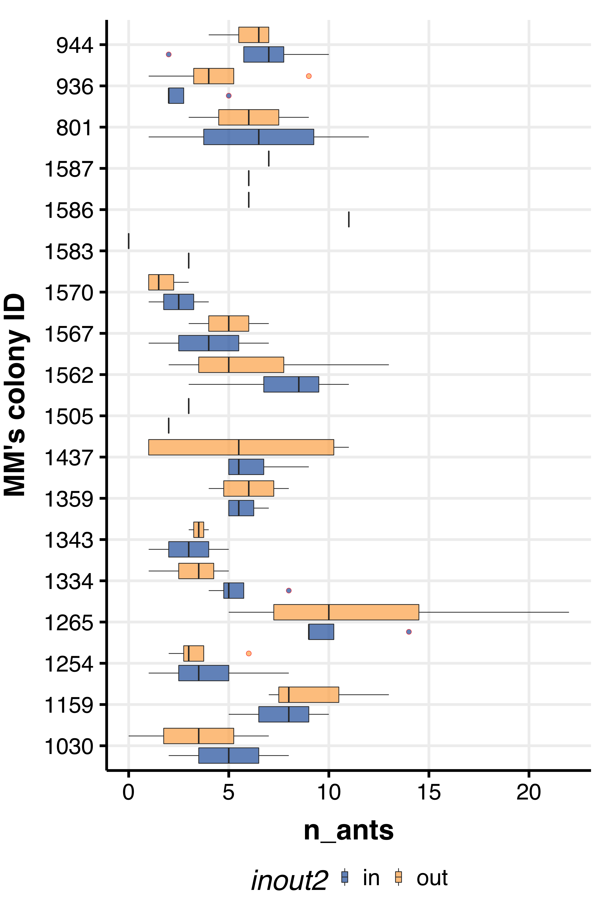
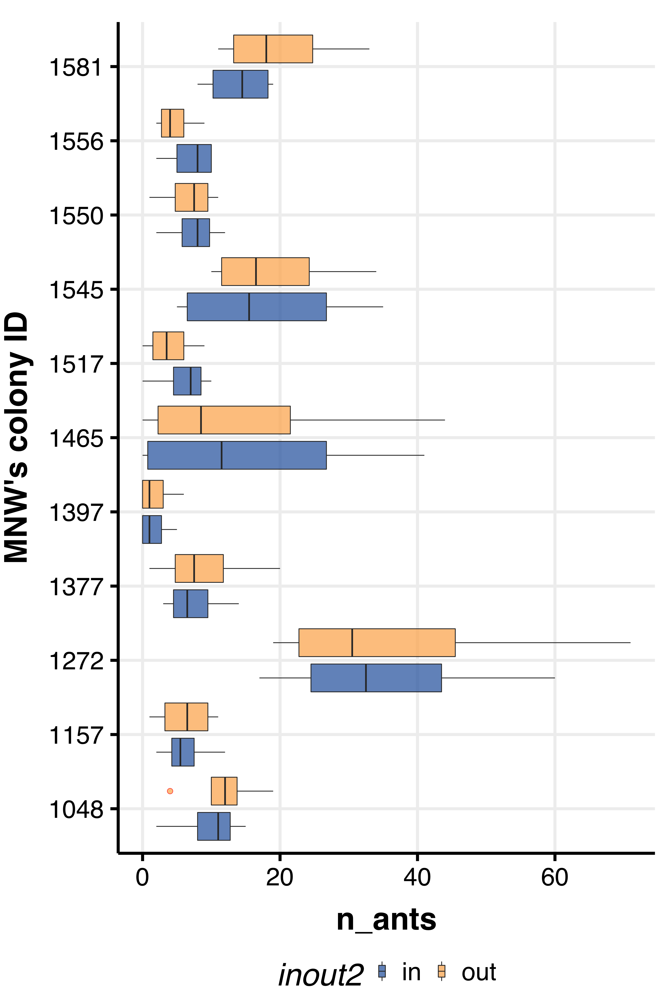
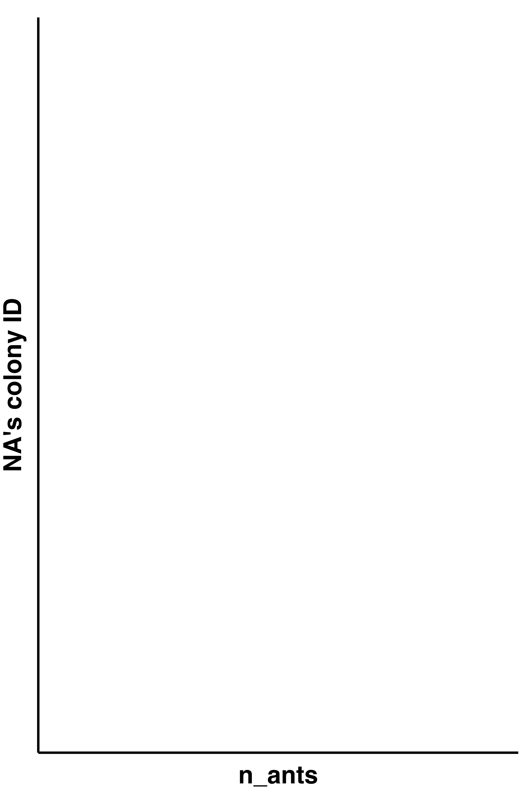
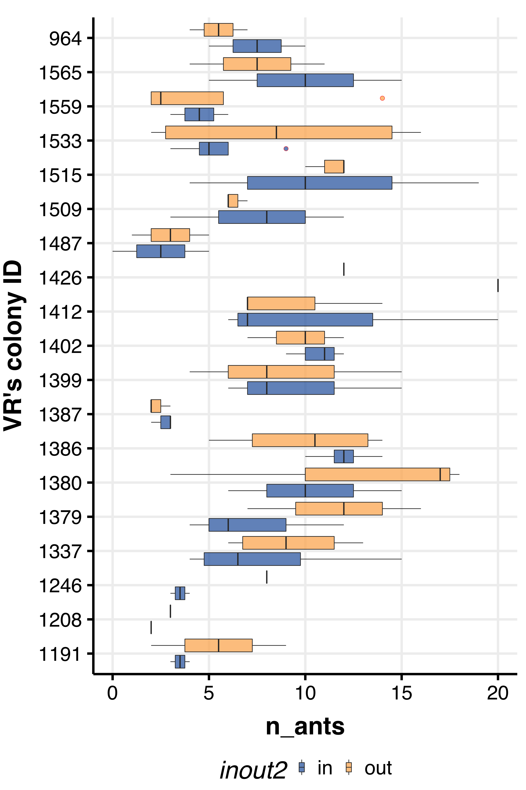
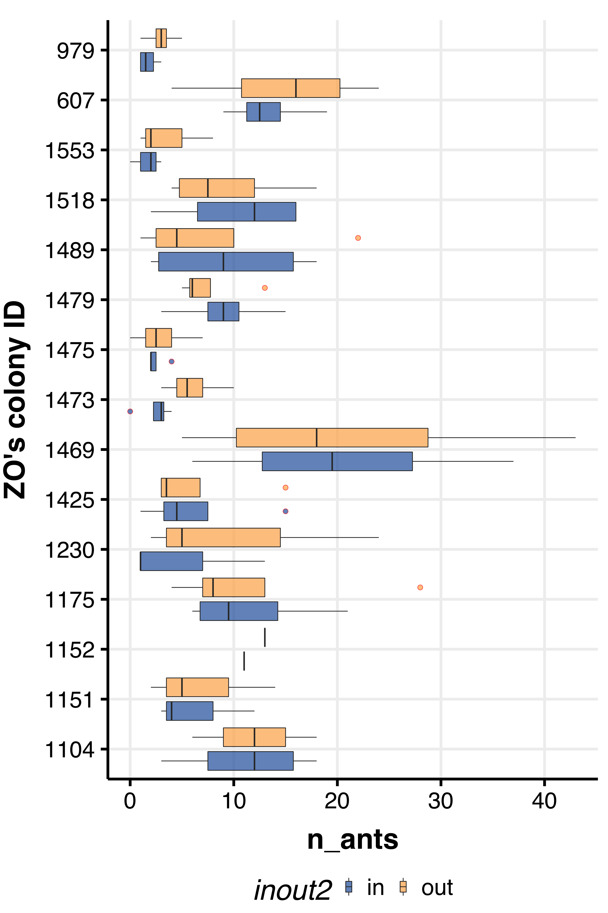

## This is where you want to specify your parameters of choice.
## Specify the name of the master file as saved on your computer
filename <- "arizona_2022_master_list_Aug13_1601h.csv"
column.names <- c("date",
"observer",
"colony_ID",
"time",
"in_1",
"out_1",
"in_2",
"out_2",
"in_3",
"out_3",
"in_4",
"out_4",
"first_obs",
"second_obs"
)Datasheet we
dat <-
read.table(paste0(path_to_repo, path_to_data, filename),
sep = ",",
header = T,
na.strings = c(""," "),
stringsAsFactors = F,
skip = 1) %>%
as_tibble() %>%
select(1:length(column.names))
colnames(dat) <- column.names
tidy.dat <-
dat %>%
group_by(date,observer,colony_ID) %>%
mutate(tot_in = sum(in_1,in_2,in_3,in_4, na.rm = T),
tot_out = sum(out_1,out_2,out_3,out_4, na.rm=T)) %>%
ungroup() %>%
mutate(colony_ID = as.factor(colony_ID),
observer = as.factor(observer)) %>%
# na.omit() %>%
pivot_longer(.,
cols = in_1:out_4,
names_to = "inout",
values_to = "n_ants") %>%
group_by(inout) %>%
mutate(inout2 = str_split_fixed(inout, "_", 2)[1]) %>%
ungroup() %>%
select(date:time, inout,
inout2,
n_ants, tot_in, tot_out, everything())observers <- tidy.dat %>% pull(observer) %>% unique() %>% as.character()
for(i in 1:length(observers)) {
f.name <- paste0(observers[[i]],"_boxplots.png")
plot.x <-
tidy.dat %>%
filter(observer == observers[[i]]) %>%
ggplot(aes(x=colony_ID, y=n_ants)) +
# ggplot(aes(x=colony_ID, y=n_ants, group=inout2)) +
geom_boxplot(aes(fill=inout2),
alpha=0.75,
outlier.size = 3,
outlier.shape = 21,
outlier.color = "red",
position = position_dodge(width = 0.95)) +
# facet_grid(~observer) +
theme_Publication(base_size = 40) +
scale_fill_Publication() +
coord_flip() +
labs(x=paste0(observers[[i]], "'s colony ID"))
png(paste0(path_to_results,
f.name),
width = 30, height = 45, units = "cm", res = 300)
print(plot.x)
trash <- dev.off()
}